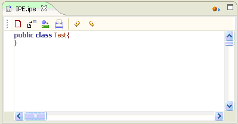
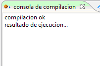
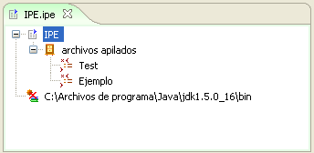
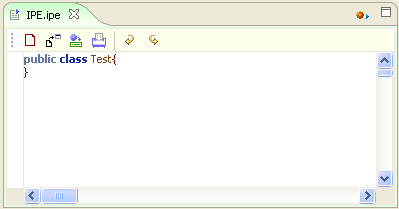
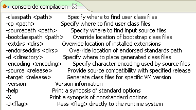

Framework IPE
El Ambiente de Programación Integrado IPE es un Framework para realizar la tarea de codificación y compilación de código. Agiliza la labor del Ingeniero de programación, al proveer integración directa de las Herramientas Editor de Código y Compilador.
Colosoft soporta la programación en lenguaje java, utilizando el JDK 1.6.x instalado en el sistema, el editor puede resaltar la sintaxis del lenguaje en uso, verificar errores de codificación y compilar el código editado.
Este framework se conecta dentro del ambiente AIA con el marco de expresión, donde sitúa el editor de código y las funciones básicas del plugin.

Figura 1. IPE dentro de AIA
La consola de compilación se ubica sobre el marco de Extensión donde aparecen los mensajes de error en compilación y los mensajes de ejecución de código.

Figura 2. Ejecutando una compilación dentro de IPE
En el Marco de Presentación muestra en forma jerárquica, la información relacionada con el proyecto actualmente abierto, a través de un árbol que se despliega para mostrar los archivos relacionados y los componentes del código en edición.

Figura 3. Marco de Presentación en IPE

Figura 4. Editor de código en IPE
Editor de código: Inserte y edite código a modo de texto. El editor de código de Coloso permite trabajar cómodamente sobre el código resaltando con diferentes colores las palabras claves correspondientes al lenguaje de programación.


Figura 5. Agrupación de código en IPE
Auto completado y sugerencias: dentro del editor utilice las teclas combinadas ctrl.+espacio, colosoft desplegara una lista de sugerencias para completar e insertar código según el contexto actual.

Figura 6. Sugerencias de código en IPE
Compilador: El compilador de Colosoft compila y ejecuta el código presente en el editor, El Compilador utiliza la consola de compilación para mostrar información relacionada con el estado de compilación y errores, también muestra los resultados de ejecución de código si este utiliza consola de salida para mostrar texto.
Figura 7. Resultados de compilación
Visualice errores de Compilación:

Figura 8. Errores de compilación